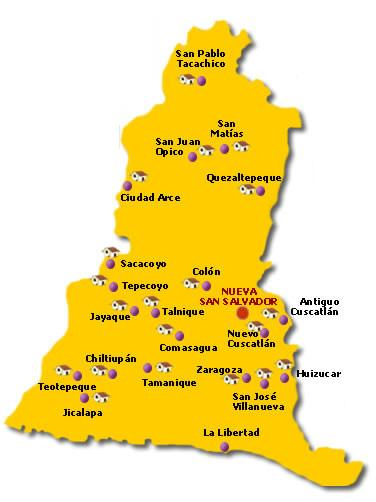

La Libertad es un departamento de El Salvador. Su cabecera es la ciudad de Santa Tecla, capital tambien del municipio homonimo. Tiene una extension territorial de 112 km² y una poblacion de 121,908 habitantes (censo oficial, 2007).

El departamento de La Libertad cuenta con una de las mas importantes zonas protegidas del pais. El Parque Nacional Walter Thilo Deininger es una zona natural protegida por el gobierno de El Salvador desde el año de 1986. El parque es una area que tiene aproximadamente 1,047 manzanas, 732 hectareas en donde existen mas de 444 tipos de arboles, los que constituyen un importante habitat para reptiles, aves, mamiferos e infinidad de insectos. El Arbol de los 1000 años en el Parque Nacional Walter Thilo Deininger. Su nombre es en honor al Aleman Walter Thilo Deininger quien renuncio a su nacionalidad Alemana para convertirse en uno de los mayores empresarios Salvadoreños que nunca dejaron de lado la actividad filantropista y humana en el pais. El Parque consta de 3 rutas de diferentes senderos, por el cual los usuarios conocen diversidad de fauna y flora acompañados de un guia. El parque se podria dividir en dos zonas, el bosque seco y el bosque humedo. Si se visita el parque en una epoca previa al verano se podra visitar un parque que parecen dos bosques unidos, uno en el que no hay ninguna hoja en el follaje de los arboles, solamente tallos cafe claro, y el otro, lleno de follaje frondoso en el que el color verde tiene predominio. En una epoca el nivel del mar llegaba a la altura del parque, por lo cual hay enormes piedras en las cuales hoy se pueden apreciar petrograbados indigenas.
El municipio celebra sus fiestas patronales en el mes de diciembre en honor al Niño Jesus.
Destacan en el departamento los rios Lempa (19.5 km) y el Sucio (32,5 km); La laguna de Chanmico con un area de 0,78 km2 y el volcan de San Salvador o Quezaltepeque con una elevacion de 1 959 msnm.
El turismo de este departamento es mas reconocido por sus playas espectaculares